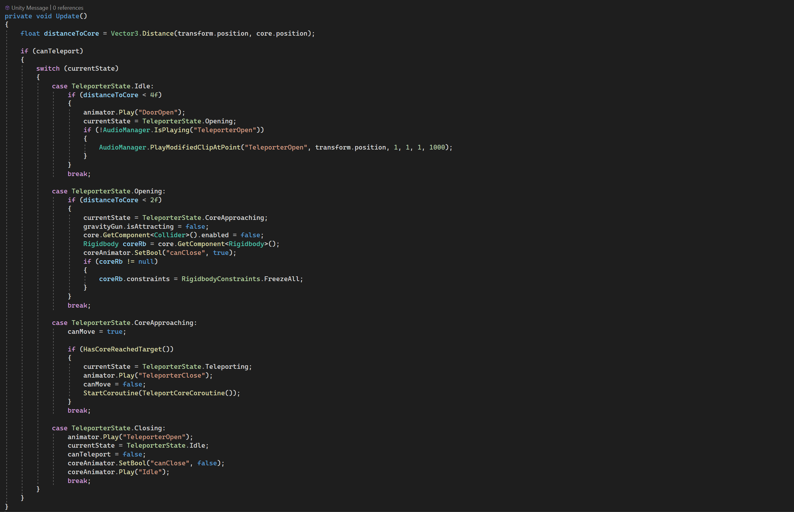

This code handles attracting objects towards a defined point (floatPoint). It first checks if there is a target; if not, it performs a raycast to find one. If a target is found and is movable, it stores its Rigidbody, constraints, and offsets. Then, if the player's mass is greater than the target's, it applies a force to pull the object towards floatPoint based on distance while preserving its rotation relative to the player.
This code manages a teleporter's behavior using a state machine (TeleporterState). It checks the distance to the core and updates the teleporter's state accordingly. When conditions are met, it triggers animations, plays sounds, enables/disables movement, and freezes/unfreezes the core's Rigidbody. The core moves towards the teleporter, and once it reaches the target, the teleportation sequence begins.